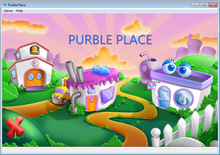

Purble place was an educational website / app game created in the 2000s.
Growing up Ive always been facinated by baking and this game was all I played
In a few weeks my brother's brithday was coming up and I decided to bake a cake for him.
Seeing the direction of my obsession, I decided to make a box made cake
Tiny me unsupervsied in a kitchen... oh lord
In my head baking a cake online and in real life was exactly as easy
That's when things went downhill...
When the electric blender was working its magic I decided to add milk while it was on and the milk just splatered everywhere
To top it off I even managed to burn the now "liquid cake" when I popped it in the oven
From that day I decided that I'd much rather stick to baking in the game. Hahaha
And now after growing up, I leave it to the bakery to create the magic
Purble place